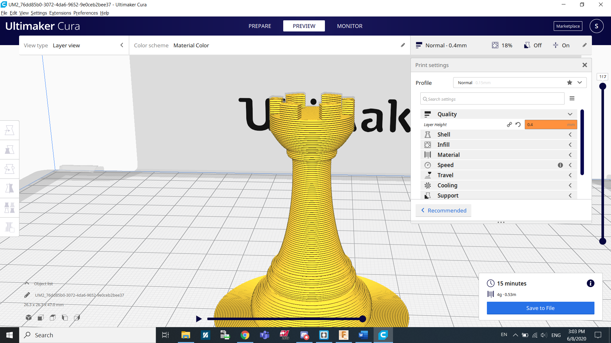

Introduction to 3D printing
What is 3D printing
3D printing, also known as additive manufacturing, is thought to be the future of manufacturing. It is the process of creating a 3D object from a digital file. The creation of a 3D printed object is achieved using additive processes. In an additive process an object is created by laying down successive layers of material until the object is created. Each of these layers can be seen as a thinly sliced horizontal cross-section of the eventual object.
Additive manufacturing is the opposite of subtractive manufacturing, which is where you remove material until you get a final product. Examples of subtractive manufacturing is milling, turning etc..
3D printing allows you to produce products never before thought possible with traditional manufacturing techniques. Let's discuss the advantages and disadvantages of 3D printing.
Advantages
- Allows more people to manufacture their own designs(easier to get a 3D printer than most other machining tools)
- Create a lot of complex shapes and designs
- Great for rapid prototyping
disadvantages
- The process is very long, about 100 times longer than regular manufacturing.
- Prototypes do not carry the strength of the actual products
Ultimaker Cura
For DFAB, we use Ultimaker Cura as a platform to help configure our designs for 3D printing. In the following steps I demonstrated is how I converted my Fusion 360 file to a Cura file ready to print.
I first started by finding the design I want under admin projects. After that, I went to Tools, Make and 3D Print.
A pop-up will appear. We need to select the bodies that we want to 3D print. For me I only have 1 (Body 1) so I selected it.

Under print utility, we will find the software needed to print the design. Cura is not a default option so I clicked custom and clicked the file icon. Search for the Cura.exe file to use. Click Ok.
After that, Cura will open up with your design. The first thing we can do is slice it. Click slice on the bottom right corner of the screen.
After slicing it, we can see the estimated time it will take as well as the amount of material needed. In my case it will take 30 minutes and would use 4grams of material. The amount of time and material used can be adjusted by changing some parameters such as infill density and layer height.
For example, to reduce print time, I might want to increase layer height from 0.2mm to 0.4mm. This means that I wil technically use the same amount of material to print the whole thing but since I'm printing 2 times the amount in one go, it will be 2 times as fast. This comes with a setback of having a less detailed final object.
When you are satisfied with what you have, save the file as gcode and print it out using the 3D printer when you are back in school.